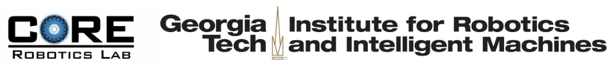

Rohan Paleja
Cognitive Optimization and Relational (CORE) Robotics Lab
Institute for Robotics and Intelligent Machines
Georgia Institute of Technology
North Ave NW, Atlanta, GA 30332

I am a Robotics Ph.D. candidate at the Georgia Institute of Technology, working with Matthew Gombolay in the CORE Robotics Lab. My interests lie broadly at the intersection of machine learning, robotics, and human-robot interaction, with a focus on Explainable AI (xAI) and multi-agent interaction. In my research, I focus on developing novel machine-learning architectures and algorithms to support robot learning and human-robot collaboration in the diverse and unstructured environments that will be encountered by these agents in the real world.
I previously received a M.Sc. in Mechanical Engineering at Rutgers University in 2018, and a B.Sc. in Mechanical Engineering with a concentration in Aerospace Engineering at Rutgers University in 2017, where I was worked with Professor F. Javier Diez-Garias on UAV autonomy and sensing.
news
Our workshop on Robot Learning in athlEtics (RoboLetics) has been accepted to the Conference of Robot Learning in Atlanta.
I gave an invited talk at the Robot Learning Seminar hosted by Mila and the Robotics and Embodied AI Lab on "Personalized and Interpretable Artificial Intelligence for Positive Human-Machine Interaction".
Our paper Learning Models of Adversarial Agent Behavior under Partial Observability has been accepted to the IEEE/RSJ International Conference on Intelligent Robots and Systems .
OurExplainable Robotics at ICRA 2023 was awarded an external sponsorship from the Artificial Intelligence Journal.
Organizing a workshop on Explainable Robotics at ICRA 2023 in London.
Our paper Athletic Mobile Manipulator System for Robotic Wheelchair Tennis has been accepted to the IEEE Robotics and Automation Letters.
Our paper Utilizing Human Feedback for Primitive Optimization in Wheelchair Tennis has been accepted to the Learning for Agile Robotics Workshop at the Conference of Robot Learning.
Our paper Fast Lifelong Adaptive Inverse Reinforcement Learning from Demonstrations has been accepted to the Conference of Robot Learning (CoRL).
Our paper Scaling Multi-Agent Reinforcement Learning via State Upsampling has been accepted to the Robotics Science and Systems Workshop on Scaling Robot Learning (RSS22-SRL).
I’ll be joining MIT Lincoln Laboratory for the summer as a summer research intern!
I’ve officially passed my PhD thesis proposal titled “Interpretable Artificial Intelligence for Personalized Human-Robot Collaboration” and am now a Ph.D. candidate!
My submission, "Mutual Understanding in Human-Machine Teaming" has been accepted to the "Advancement of Artificial Intelligence Conference (AAAI) Doctoral Consortium".
Our paper "The Utility of Explainable AI in Ad Hoc Human-Machine Teaming" has been published to the " Conference on Neural Information Processing Systems (NeurIPS).
Our paper "MAGIC: Multi-Agent Graph Attention Communication" was accepted " ICCV 2021 workshop on Multiagent Interaction and Relational Reasoning (MAIR2) and won a Best Workshop Paper award.
Our paper "Towards Sample-efficient Apprenticeship Learning from Suboptimal Demonstration" was accepted " AAAI Artificial Intelligence for Human-Robot Interaction (AI-HRI) Fall Symposium.
I was awarded the Outstanding Graduate Teaching Assistant Award for the School of Interactive Computing at the Georgia Institute of Technology.
Our paper "Multi-Agent Graph-Attention Communication and Teaming" has been accepted to the " International Conference on Autonomous Agents and Multiagent Systems (AAMAS).
Our paper "Learning from Suboptimal Demonstration via Self-Supervised Reward Regression" was accepted to the Conference on Robot Learning (CoRL). and received a best paper nomination.